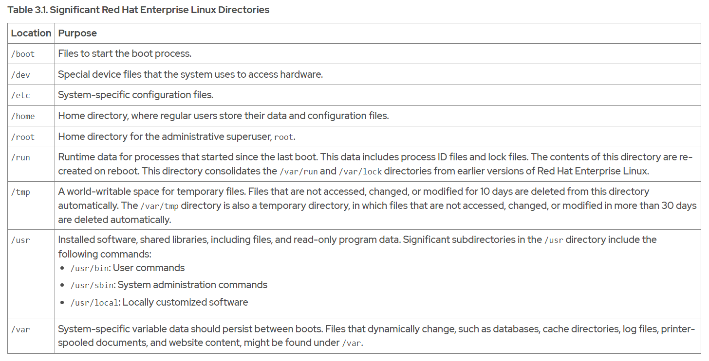
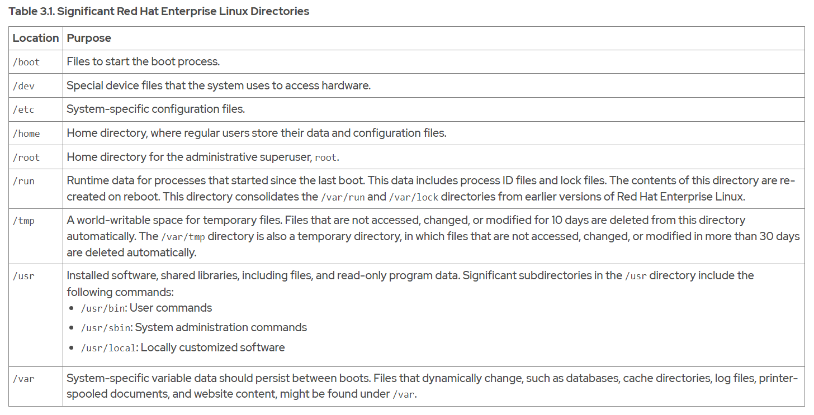

The GNU Bourne-Again Shell (bash) is a program that interprets commands that the user types. Each string that is typed into the shell can have up to three parts: the command, options (which usually begin with a hyphen - or double hyphen -- characters), and arguments. Each word that is typed into the shell is separated from other words with spaces.
whoami
To type more than one command on a single line, use the semicolon (;) as a command separator. A semicolon is a member of a class of characters called metacharacters that have a special interpretation for bash.
The date command displays the current date and time.
date
date +%x
The passwd command with no options changes the current user's password.
passwd
Linux does not require file name extensions to classify files by type. The file command scans the compiled header of a file for a 2-digit magic number and displays its type.
file /etc/passwd
file /bin/passwd
file /home
The cat command is often used in Linux. Use this command to create single or multiple files, view the contents of files, concatenate the contents from various files, and redirect contents of the file to a terminal or to files.
cat /etc/passwd
cat file1 file2
The cat command does not display the contents of a file as pages. The less command displays one page of a file at a time and we can scroll at our leisure.
The head and tail commands display the beginning and the end of a file, respectively. By default, these commands display 10 lines of the file, but they both have a -n option to specify a different number of lines.
head /etc/passwdtail -n 3 /etc/passwd
The wc command counts lines, words, and characters in a file. Use the -l, -w, or -c options to display only the given number of lines, words, or characters, respectively.
wc /etc/passwdwc -l /etc/passwd ; wc -l /etc/groupwc -c /etc/group /etc/hosts
With tab completion, users can quickly complete commands or file names after typing enough at the prompt to make it unique. If the typed characters are not unique, then pressing the Tab key twice displays all commands that begin with the typed characters.
Use the useradd command to create users on the system. The useradd command has many options that might be hard to remember. By using tab completion, we can complete the option name with minimal typing.
To write one command in more than one line, use a backslash character (\), which is referred to as the escape character. The backslash character ignores the meaning of the following character.
The history command displays a list of previously executed commands that are prefixed with a command number.
history
The exclamation point character (!) is a metacharacter to expand previous commands without retyping them. The !number command expands to the command that matches the specified number. The !string command expands to the most recent command that begins with the specified string.
The Alt+. key combination is particularly convenient, because we can hold down Alt and press . repeatedly to quickly cycle earlier commands.
Ctrl+A Jump to the beginning of the command line. Ctrl+E Jump to the end of the command line.
 

Relative path names follow this rule: a path name with anything other than a forward slash as the first character is a relative path name. For example, relative to the /var directory, the message log file is log/messages.
Linux file systems, including ext4, XFS, GFS2, and GlusterFS, are case-sensitive. Creating the FileCase.txt and filecase.txt files in the same directory results in two unique files.
The pwd command displays the full path name of the current working directory for that shell. This command helps us to determine the syntax to reach files by using relative path names. The ls command lists directory contents for the specified directory or, if no directory is given, for the current working directory.
pwdls
The ls command has multiple options for displaying attributes on files. The most common options are -l (long listing format), -a (all files, including hidden files), and -R (recursive, to include the contents of all subdirectories).
ls -lls -la
At the top of the listing are two special directories. One dot (.) refers to the current directory, and two dots (..) refer to the parent directory. These special directories exist in every directory on the system, and they are useful when using file management commands.
Use the cd command to change your shell's current working directory. If we do not specify any arguments to the command, then it changes to your home directory.
The cd - command changes to the previous directory, where the user was previously to the current directory.
cd -
The prompt displays the tilde character (~) when our current working directory is our home directory.
The touch command updates the time stamp of a file to the current date and time without otherwise modifying it. This command is useful for creating empty files.
touch
The mkdir command creates one or more directories or subdirectories. It takes as an argument a list of paths to the directories that we want to create
mkdir ProjectX ProjectY ProjectZ
If the directory exists, or a parent directory of the directory that we are trying to create does not exist, then the mkdir command fails and it displays an error.
The mkdir command -p (parent) option creates any missing parent directories for the requested destination.
The cp command copies a file, and creates a file either in the current directory or in a different specified directory.
cp
We can also use the cp command to copy multiple files to a directory. In this scenario, the last argument must be a directory. The copied files retain their original names in the new directory. If a file with the same name exists in the target directory, then the existing file is overwritten.
By default, the cp command does not copy directories; it ignores them. We can copy directories and their contents by using the cp command -r option.
cp -r
The mv command moves files from one location to another. If we think of the absolute path to a file as its full name, then moving a file is effectively the same as renaming a file. The contents of the files that are moved remain unchanged.
mvmv -v
The rm command removes files. By default, rm does not remove directories. We can use the rm command -r or the --recursive option to enable the rm command to remove directories and their contents. The rm -r command traverses each subdirectory first, and individually removes their files before removing each directory. We can use the rm command -i option to interactively prompt for confirmation before deleting. This option is essentially the opposite of using the rm command -f option, which forces the removal without prompting the user for confirmation. If We specify both the -i and -f options, then the -f option takes priority and we are not prompted for confirmation before rm removes files.
rmrm -r
rm -i
rm -f
We can also use the rmdir command to remove empty directories. Use the rm command -r option to remove non-empty directories.
rmdir
We can create multiple file names that point to the same file. These file names are called links. We can create two types of links: a hard link, or a symbolic link (sometimes called a soft link).
Every file starts with a single hard link, from its initial name to the data on the file system. When we create a hard link to a file, we create another name that points to that same data.
We can use the ln command to create a hard link (another file name) that points to an existing file. The command needs at least two arguments: a path to the existing file, and the path to the hard link that we want to create.
ln filename1 filename2
To determine whether two files are hard linked, use the ls command -i option to list each file's inode number. If the files are on the same file system and their inode numbers are the same, then the files are hard links that point to the same data file content.
ls -il filename1 filename2
Hard links that reference the same file share the inode structure with the link count, access permissions, user and group ownership, time stamps, and file content. When that information is changed for one hard link, then the other hard links for the same file also show the new information.
Even if the original file is deleted, we can still access the contents of the file provided that at least one other hard link exists. Data is deleted from storage only when the last hard link is deleted, which makes the file contents unreferenced by any hard link.
Hard links have some limitations. First, we can use hard links only with regular files. We cannot use the ln command to create a hard link to a directory or special file.
Second, we can use hard links only if both files are on the same file system.
We can use the df command to list the directories that are on different file systems.
df
The ln command -s option creates a symbolic link, which is also called a "soft link". A symbolic link is not a regular file, but a special type of file that points to an existing file or directory.
Symbolic links have some advantages over hard links: Symbolic links can link two files on different file systems. Symbolic links can point to a directory or special file, not just to a regular file.